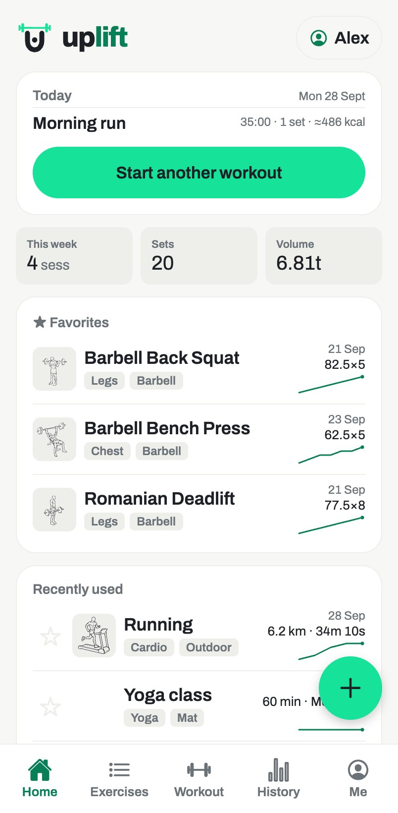
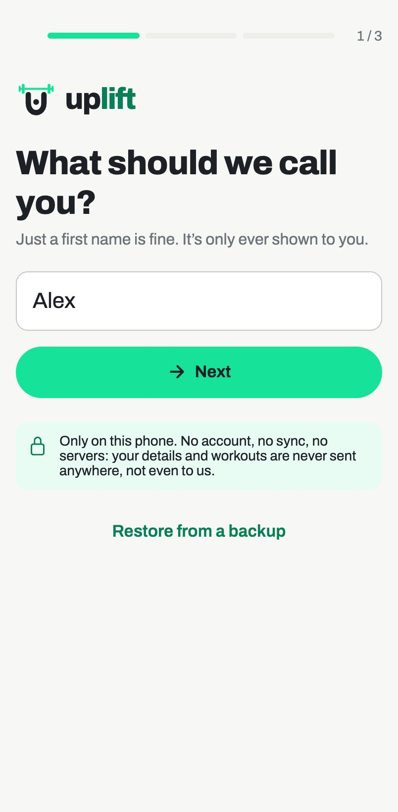
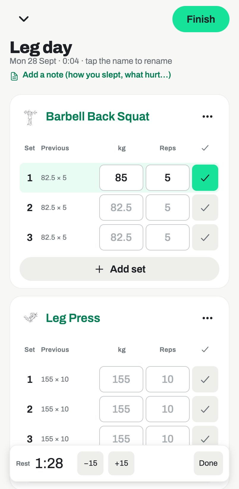
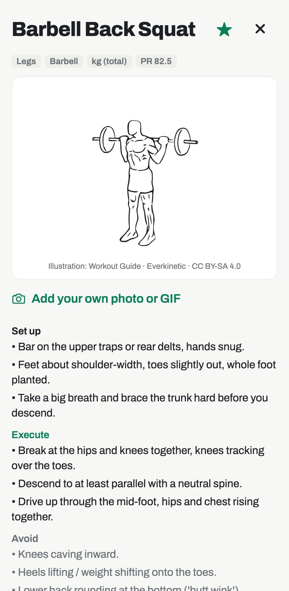
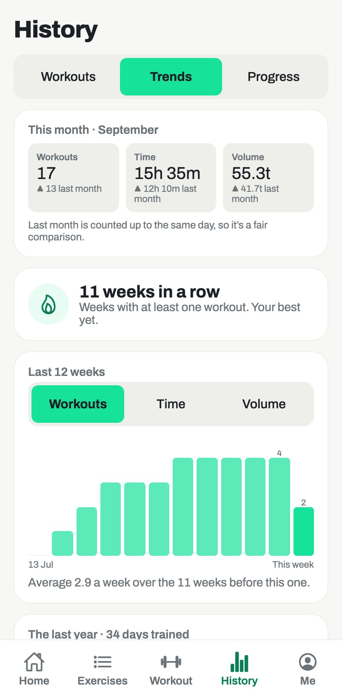
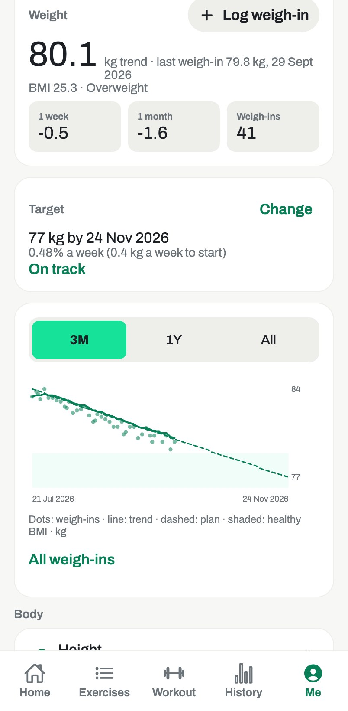
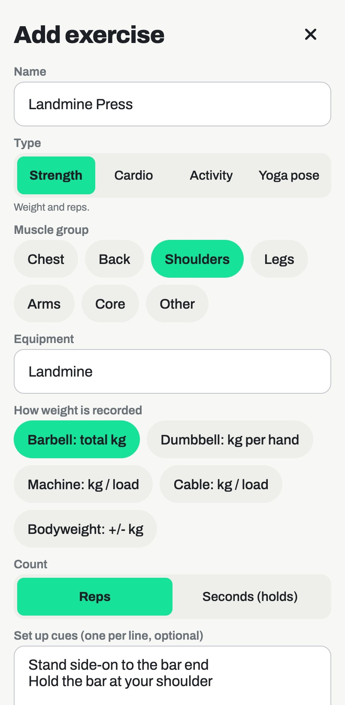

Train hard.Keep it yours.
Uplift logs your lifts, yoga, runs and classes, and shows your progress over time. It runs on your phone and stays there: no account, no sync, nothing sent anywhere.

Made for the gym floor
Big targets, last session's numbers already filled in, and nothing between you and your next set.






Everything you do to get fitter, in one log
Built around how people actually train: quick to fill in between sets, honest about progress.
Workouts that fill themselves in
Start from a template and every set comes pre-filled with last time's numbers.
- Rest timer starts when you tick a set
- Warm-up and drop sets, estimated 1RM
- Bring your history from the Strong app
More than lifting
Yoga asanas and pranayama, runs, rides, swims, sports and classes, each logged the way it's done.
- 39 asanas as rounds × hold, with how-to steps
- Anulom Vilom, Kapalbhati, Surya Namaskar
- Estimated calories for every workout
Progress you can trust
A weight trend that ignores daily noise, a target plan at a safe weekly pace, and charts for every exercise.
- BMI, body fat, measurements, photos
- Weigh-in reminders in your own calendar
- kg or lb, cm or ft / in
Your data never leaves your phone
Most fitness apps want an account so they can keep your data. Uplift works the other way round.
- No accountNothing to sign up for. Open it and start logging.
- No serversYour workouts, weigh-ins and photos are stored only on your device.
- No ads, no trackersNo analytics and no cookies, on this page or in the app.
- Backups you controlSave an encrypted backup to your own Files, iCloud or Drive, and restore it on a new phone.
Ready in under a minute
Uplift runs in your phone's browser and installs like an app. No app store needed.
Open app.getuplift.pro
In Safari on iPhone, or Chrome on Android.
Add it to your Home Screen
It then opens full screen, works offline, and your data is safer. The app shows you how.
Log your first workout
Pick a goal, start a workout, tick your sets. Coming from another app? Bring your history with you.
Questions
Where is my data stored?
On your phone, in the app's own storage. Nothing is uploaded, synced or shared, so no one else can see it, including us.
What happens if I change phones?
Save a backup in Settings (you can lock it with a passphrase), keep the file in Files, iCloud Drive or Google Drive, and restore it on the new phone.
Does it work offline?
Yes. Once it's on your Home Screen, Uplift opens and works without a connection, at the gym or anywhere else.
iPhone or Android?
Both. On iPhone use Safari, on Android use Chrome, then add it to your Home Screen.
Can I bring my workouts from another app?
Yes. If you use Strong, the popular workout-tracking app, export your data from Strong’s settings (it gives you a CSV file), then in Uplift open Me → Settings → Import from Strong. Your workouts, sets, warm-ups and cardio all come across.
Using a different app or a spreadsheet? Email us and we’ll help you move your history over.